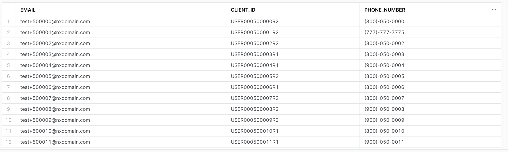

In this guide, we'll be walking you through how to validate that the assumptions you've made about your identity model are correct using Simon Data's Snowflake native app, IdentityQA. Let's get going!

Prerequisites
- A Snowflake account with an accessible warehouse, database, schema, and role
What You'll Need
- A Snowflake role with the ability to install Snowflake native apps & grant usage to the application (the ACCOUNTADMIN role works here)
- A basic understanding of your company's identity model and the relationships between customer identifiers
- A single source table that contains at least two identifier columns to validate (e.g. user_id & email_address)
What You'll Learn
By the end of this guide, you'll learn:
- How to install & use a Snowflake native app
- Whether or not the assumptions you've made about your company's identity model are true
- For example: is your stable identifier truly unique? Is user_id truly 1:1 with email_address?
- % of invalid email addresses & phone numbers in your identity table with examples of each for easy cleanup
- How to improve your identity model based on the native app's findings
What You'll Build
- A QA report on your company's identity model that provides insights into how the model and/or underlying data can be improved to support better & more accurate marketing use cases
Native App Overview
First, it's important to understand how Snowflake native apps work and the benefits they provide from a security & privacy standpoint.
- Provider (in this case, Simon Data) creates an application package with manifest (metadata), setup script (SQL), and business logic (resource files).
- Provider publishes the application package as a listing on the Snowflake native app marketplace.
- Consumer (in this case, you) installs the application package from the listing in their own Snowflake account in order to create the application.
By default, the application has no permissions to do anything in your Snowflake account. You must grant account- & object-level privileges to the application. Once permission is granted, the app only has read-only access to the data within and will never make any changes or transformations to the data. Once the app is run, the output is a set of tables in the application schema that you can query to see the results of the QA on your identity model.
Install IdentityQA
In Snowflake, under Marketplace, search for Simon Data's IdentityQA listing. Click Get to request the application for your Snowflake account.

You will be asked to select a warehouse to be used for installation and name the application.

In Snowflake, under Data → Private Sharing, install the IdentityQA listing.
Create the Application in Your Snowflake
Once installed, you'll have to change the name of the app to what you named it upon installation by running the following command in a worksheet:
CREATE APPLICATION <CHOSEN APP NAME>
FROM APPLICATION PACKAGE IDQAAPP;
Expand the APP schema and see a number of Procedures that make up the IdentityQA app. The rest of this guide will walk you through how to use those procedures.
Grant Privileges
Before the app can run, however, you need to give it access to the correct database, schema, and table. Run the following commands:
GRANT USAGE ON DATABASE <YOUR_DATA_DB_NAME> to APPLICATION <CHOSEN APP NAME>;
GRANT USAGE ON SCHEMA <YOUR_DATA_SCHEMA_NAME> to APPLICATION <CHOSEN APP NAME>;
GRANT SELECT ON TABLE <YOUR_TABLE_NAME> TO APPLICATION <CHOSEN APP NAME>;
- YOUR_DB_NAME is the database name that contains your input table or view and will contain the IdentityQA output.
- YOUR_SCHEMA_NAME is the database schema from the last argument that contains your input table or view and will contain the IdentityQA output.
- YOUR_TABLE_NAME is the table/view that will serve as the input for the IdentityQA application.
In a worksheet, run the SET_INPUT_TABLE stored procedure, as follows. Be sure to include as many lines as you have identifiers in your source table.
CALL <CHOSEN APP NAME>.APP.SET_INPUT_TABLE('SOURCE_TABLE', [['<SOURCE_COLUMN>', '<IDENTIFIER_TYPE>', <IS_STABLE>],
['<SOURCE_COLUMN>', '<IDENTIFIER_TYPE>', <IS_STABLE>],
['<SOURCE_COLUMN>', '<IDENTIFIER_TYPE>', <IS_STABLE>]]);
- SOURCE_TABLE is the table name you specified when setting up and granting usage to the app. This should be fully qualified, meaning it should be formatted like: ‘YOUR_DB_NAME.YOUR_SCHEMA_NAME.YOUR_TABLE_NAME'
- SOURCE_COLUMN is the column name that contains the identifier you are configuring.
- IDENTIFIER_TYPE defines the type of identifier in the previous argument. Examples of supported identifier types are:
- user_id
- phone_number
- custom_id
- IS_STABLE is a boolean field that tells us whether or not the identifier should be stable. A stable identifier is one that is unique, is 1:1 with a single profile, and cannot be shared across profiles.
- If the identifier you're configuring is stable, put TRUE here. If it is not stable, put FALSE.
EXAMPLE QUERY:
CALL SIMONIDQA.APP.SET_INPUT_TABLE('SIMONDATA_TEST.PUBLIC.IDENTITY', [['EMAIL', 'EMAIL', TRUE],
['CLIENT_ID', 'CUSTOM_ID', FALSE],
['PHONE_NUMBER', 'PHONE_NUMBER', FALSE]]);
Once you've configured your identifiers, you can set certain constraints (or assumptions) to validate. These constraints outline the relationships between two identifiers (i.e. 1:1 or 1:many) and identifier-specific limits (e.g. device_id can be shared across a maximum of 5 profiles).
SET_RELATIONSHIP_CONSTRAINT
CALL <CHOSEN APP NAME>.APP.SET_RELATIONSHIP_CONSTRAINT('<RELATIONSHIP_TYPE>', '<IDENTIFIER_1>', '<IDENTIFIER_2>');
- RELATIONSHIP_TYPE is the relationship between the identifiers in the next two arguments. The only supported type today is ONE-TO-ONE.
- IDENTIFIER_1 is the name of the first identifier for which you're validating the relationship type.
- IDENTIFIER_2 is the name of the second identifier for which you're validating the relationship type.
SET_RELATIONSHIP_CONSTRAINT EXAMPLE QUERY:
The query below tells the application to validate whether or not user_id and email truly have a 1:1 relationship. If there are instances where the 1:1 relationship constraint is invalidated, the app flags them in the generated report.
CALL SIMONIDQA.APP.SET_RELATIONSHIP_CONSTRAINT('ONE-TO-ONE', 'CLIENT_ID', 'EMAIL');
SET_UNIQUE_CONSTRAINT
This constraint checks for the uniqueness of the values for a particular identifier.
CALL <CHOSEN APP NAME>.APP.SET_UNIQUE_CONSTRAINT('<IDENTIFIER_NAME>');
- IDENTIFIER_NAME is the name of the identifier for which you want to check the uniqueness.
SET_UNIQUE_CONSTRAINT EXAMPLE QUERY:
CALL SIMONIDQA.APP.SET_UNIQUE_CONSTRAINT('EMAIL');
SET_SHARED_IDENTIFIER_LIMIT
This constraint sets a maximum threshold for which a single identifier can be shared across different profiles.
CALL <CHOSEN APP NAME>.APP.SET_SHARED_IDENTIFIER_LIMIT('<IDENTIFIER_NAME>', <THRESHOLD>);
- IDENTIFIER_NAME is the name of the identifier for which you want to set a maximum threshold.
- THRESHOLD is the maximum number of different profiles on which the IDENTIFIER_NAME in the previous argument can exist. This field should be an integer.
SET_SHARED_IDENTIFIER_LIMIT EXAMPLE QUERY:
A customer may have a landline that they share with everyone in the household. Let's say the average number of people in a household is 3 and you believe your customer base tends to have landlines. You could set your shared identifier limit threshold to 3 to validate this assumption.
CALL SIMONIDQA.APP.SET_SHARED_IDENTIFIER_LIMIT('phone_number', 3);
Manual Inspection
Run the following command to generate your IdentityQA report!
CALL <CHOSEN APP NAME>.APP.generate_report();
The output will be available in the following tables in the REPORT schema within the SIMON_IDENTITY_QA application as well as on the Report page in the Streamlit. To query the tables directly in the REPORT schema within the application, you can run the following:
-- RUN THIS QUERY TO PULL THE TABLE NAMES SPECIFIC TO YOUR IDENTIFIERS
SELECT * FROM <CHOSEN APP NAME>.REPORT.CARDINALITY_TABLES
-- THEN RUN A SELECT * ON EACH OF THE TABLES GENERATED. FOR EXAMPLE:
SELECT * FROM <CHOSEN APP NAME>.REPORT.CARDINALITY_CHECK_USER_ID_EMAIL
-- THE REST OF THESE QUERIES CAN BE RUN TO INSPECT OTHER RESULTS
SELECT * FROM <CHOSEN APP NAME>.REPORT.IDENTIFIER_VALIDATION
SELECT * FROM <CHOSEN APP NAME>.REPORT.INVALID_IDENTIFIERS
SELECT * FROM <CHOSEN APP NAME>.REPORT.RELATIONSHIP_CONSTRAINTS_CHECKS
SELECT * FROM <CHOSEN APP NAME>.REPORT.SHARED_IDENTIFIER_LIMIT_CHECKS
SELECT * FROM <CHOSEN APP NAME>.REPORT.UNIQUE_CONSTRAINTS_CHECKS
Streamlit Report
To view your report in Streamlit, return to the app & launch it in Streamlit. Steps below:
- If you're in a worksheet, click the back arrow in the top left corner of your screen to return to Snowsight.
- Click Apps. Make sure you're in the correct Snowflake role!
- Click the SIMON_IDENTITY_QA application to launch the Streamlit. The name of the app on this page should be what you named it upon installation.
- Select a warehouse in the upper righthand corner of the Streamlit if one is not chosen already.
- Your Streamlit will now load! It may take a little while depending on how many rows of data you ran through the application.
- Click on the Report page in the lefthand navigation of the Streamlit.
This is an example input table that we used to generate the report shown in screenshots below.

The top of the report shows you the name of the input table you configured as well as the total number of rows in said input table.

Constraint Checks
Next, the report will show pass/fail statuses on the constraints you configured.
As you can see in the screenshot below, the client_id & email identifiers did not pass the 1:1 relationship check. This tells you that the app found instances where an email or client_id had more than one of the other identifier. Examples of these failures will be explored later.

Additionally, the shared identifier limit check failed on phone_number. This means that the app discovered instances where a single phone_number appears on more than 3 profiles, which violates the assumption that phone_number is shared at most across 3 profiles at any given time.
Cardinality Checks
The next check is a high-cardinality test for each identifier in the input table compared to the stable identifier. IdentityQA tests for cardinality because exceptionally high counts of any identifier per single stable identifier generally mean that there is an issue with the underlying data. In the screenshot below, you can see that there are 10 profiles that have an abnormally high count of client_ids compared to the other 15 profiles in the sample. This tells you that these emails may be fake, or maybe they're emails used for testing purposes and should be excluded from marketing.
Your next step here should be to dive into these email addresses and determine why they might have so many client_ids associated with them and if they're valid profiles or not.

Identifier Validation
Next, the report shows email & phone_number validations. You can see in this example that out of the ~1M total records in the input table, ~30K emails are considered invalid and ~80K phone numbers are considered invalid.


Congratulations! You've successfully QA'd your customer identity model using Simon Data's Native Snowflake App, IdentityQA! You now have the insight you need to be able to finetune & improve your identity model.
What You Learned
- How to install & use a Snowflake native app
- Whether or not the assumptions you've made about your company's identity model are true
- % of invalid email addresses & phone numbers in your identity table with examples of each for easy cleanup
- How to improve your identity model based on the native app's findings